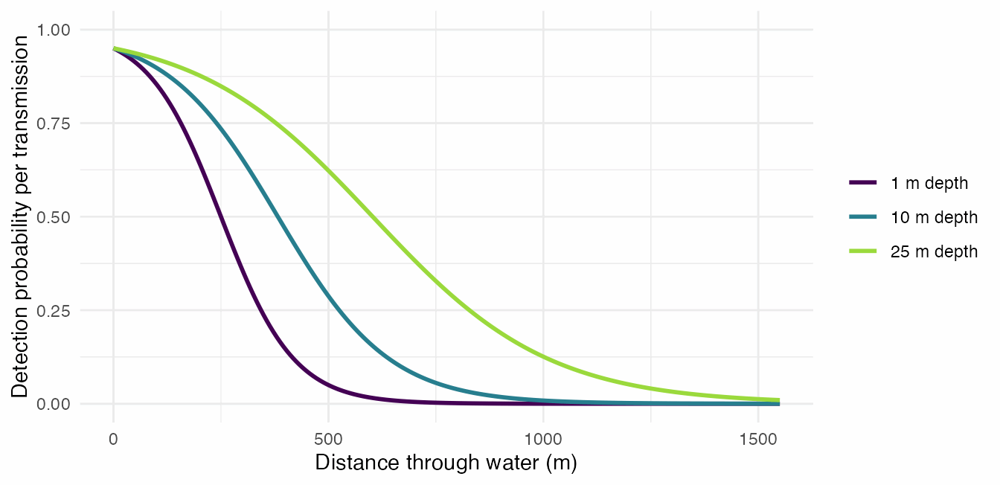
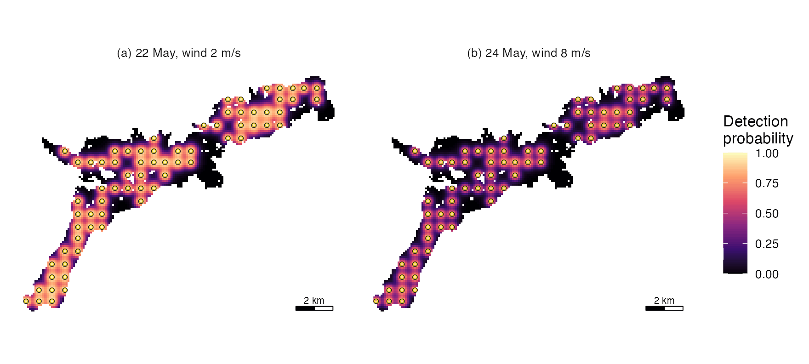
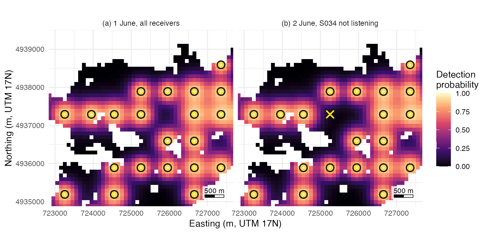

Range models: bring your own, or start from two distances
Source:vignettes/range-model.Rmd
range-model.Rmddetfield never fits a range model.
de_model() takes the one you fitted: a glm, an
mgcv gam or a glmmTMB
model, a table of curve values, or a function of distance and depth. Fit
a smooth over time with mgcv: de_model()
drops random effects, so the s() smooth of a
glmmTMB model reaches the field as a straight line.
de_logistic() builds a curve from two distances, for a
study with no range test. Detection range varies across a water body and
over time, with receiver depth, wind, noise, temperature structure and
the bottom, and a range model fitted to your own range test or sentinel
tags is the intended input. This page shows the stand-in, a model fitted
with receiver depth, and a model that also changes with date, read into
a detection field for each day. It ends with the array’s coverage per
day and what a silent receiver does to a surface.
The stand-in: two distances
de_logistic() takes d50 and
d05, the distances at which half and 5% of transmissions
are heard, at one or more receiver depths, and interpolates them
linearly between depths. The Stoney example’s range model is three
lines:
# Attach detfield, and ggplot2 for the figures
library(detfield)
library(ggplot2)
# Build the curve from d50 and d05 at 1 m and 35 m, with no spread
stand_in <- de_model(de_logistic(d50 = c(250, 750), d05 = c(500, 1500),
depth = c(1, 35)),
sigma = list(station_hour = 0))
stand_in
#> <de_model> de_logistic, d50 250/750 m, d05 500/1500 m, depths 1/35 m
#> reads: distance_m, depth_m
#> sigma: station_hour 0 logits
#> blocked line of sight: curve read at the distance through waterplot() draws a detection model at the depths asked
for:

The stand-in curve at three receiver depths.
The stand-in is a guess at the shape. Use it to score a design before a range test, or to see how a result changes with the curve; for positions, fit the curve to your study.
A model fitted with depth
stoney_range_test is a range test at receiver depths of
1 m and 25 m, already counted by range_test_counts(): one
row per receiver, tag and hour, with the transmissions sent and heard. A
logistic regression on distance, depth and their interaction lets a
deeper receiver hear further; de_model() reads it as
fitted:
# Fit heard out of sent on distance, receiver depth and their interaction
depth_fit <- glm(cbind(heard, sent - heard) ~ distance_m * depth_m,
family = binomial, data = stoney_range_test)
depth_model <- de_model(depth_fit, sigma = list(station_hour = 0))
# Compare it with the stand-in at 250 m and 500 m, at 1 m and 25 m depth
check <- expand.grid(distance_m = c(250, 500), depth_m = c(1, 25))
check$fitted <- plogis(depth_model$predict(check$distance_m,
depth_m = check$depth_m))
check$stand_in <- plogis(stand_in$predict(check$distance_m,
depth_m = check$depth_m))
round(check, 3)
#> distance_m depth_m fitted stand_in
#> 1 250 1 0.497 0.500
#> 2 500 1 0.048 0.050
#> 3 250 25 0.843 0.849
#> 4 500 25 0.615 0.623The range test was simulated from the stand-in’s curve, so the two agree at the tested depths. Get started fits the same model from the range-test files and draws it over the counts.
A model that changes with date
stoney_range_covariates is a range test of six days from
22 May 2024: three receivers at 1 m and three at 25 m, each hearing
eight tags of two models every hour. Its counts vary with the day’s
wind, and between receivers and between hours. A sentinel test that runs
through a study gives this kind of record. The model takes a day number,
and a level for each receiver and hour for the random effect of a
receiver-hour:
# Number the days from the first day of the test
range_test <- stoney_range_covariates
first_day <- as.Date("2024-05-22")
range_test$day <- as.numeric(as.Date(range_test$datetime) - first_day)
# Make factors for the receiver and receiver-hour random effects
range_test$receiver_hour <- factor(paste(range_test$receiver_serial,
format(range_test$datetime)))
range_test$receiver_serial <- factor(range_test$receiver_serial)
range_test$tag_model <- factor(range_test$tag_model)
c(rows = nrow(range_test), days = length(unique(range_test$day)),
receiver_hours = nlevels(range_test$receiver_hour))
#> rows days receiver_hours
#> 6912 6 864mgcv::bam() fits the counts on distance, depth and their
interaction, tag model, a smooth over the day, and random effects for
each receiver and each receiver-hour:
# Fit a binomial GAM with a smooth over day and two random effects
time_fit <- mgcv::bam(
cbind(heard, sent - heard) ~ distance_m * depth_m + tag_model +
s(day, k = 5) + s(receiver_serial, bs = "re") +
s(receiver_hour, bs = "re"),
family = binomial, data = range_test, discrete = TRUE
)
summary(time_fit)$s.table
#> edf Ref.df Chi.sq p-value
#> s(day) 3.877501 3.884212 140.4677 0.000000e+00
#> s(receiver_serial) 3.919710 4.000000 83155.1678 1.448129e-06
#> s(receiver_hour) 803.206022 864.000000 41896.1904 4.769599e-04The counts were simulated with a fall of 0.25 logits for each m/s of
the day’s mean wind (?stoney_range_covariates), so the
smooth can be checked against the day effect it should find:
# Predict the curve's logit at 300 m and 1 m depth for a V13-1x tag, each day
days <- data.frame(day = 0:5, distance_m = 300, depth_m = 1,
tag_model = "V13-1x",
receiver_serial = levels(range_test$receiver_serial)[1],
receiver_hour = levels(range_test$receiver_hour)[1])
fitted_logit <- predict(time_fit, days,
exclude = c("s(receiver_serial)", "s(receiver_hour)"))
# Set the day effect the counts were simulated with, from the day's wind
wind <- tapply(range_test$wind_ms, range_test$day, unique)
simulated_logit <- -0.25 * (wind - 4)
# Centre both on their mean and compare
round(data.frame(day = 0:5, wind_ms = wind,
fitted = fitted_logit - mean(fitted_logit),
simulated = simulated_logit - mean(simulated_logit)), 2)
#> day wind_ms fitted simulated
#> 0 0 2 0.71 0.67
#> 1 1 5 -0.45 -0.08
#> 2 2 8 -0.39 -0.83
#> 3 3 3 0.02 0.42
#> 4 4 6 0.03 -0.33
#> 5 5 4 0.07 0.17The smooth finds the calm first day and the drop after it, and damps the day-to-day swings that followed: a smooth over six days cannot follow a covariate that jumps between days. When a weather record gives the driver, the day’s wind can enter the model as a term instead, and a smooth over date suits a sentinel record that runs for weeks or months. The spread the surfaces need is the standard deviation of one receiver’s hourly logit about the curve, here from the two random effects together:
# Take the standard deviation of each random effect: for a binomial model
# its variance is 1 over the effect's smoothing parameter
sds <- 1 / sqrt(time_fit$sp[c("s(receiver_serial)", "s(receiver_hour)")])
round(sds, 2)
#> s(receiver_serial) s(receiver_hour)
#> 0.58 0.96
spread <- sqrt(sum(sds^2))
spread
#> [1] 1.116859de_model() reads the fit through predict()
with the random effects left out. A modulator gives the model each day’s
covariates: here a function that turns a date into the day number. A
covariates function adds the columns predict() needs for
the two left-out effects:
# Turn a date into the day number the smooth was fitted on
day_of <- function(date) as.numeric(as.Date(date) - first_day)
# Add a receiver and a receiver-hour level, which exclude = leaves out
add_levels <- function(pairs) {
pairs$receiver_serial <- levels(range_test$receiver_serial)[1]
pairs$receiver_hour <- levels(range_test$receiver_hour)[1]
pairs
}
time_model <- de_model(time_fit, sigma = list(station_hour = spread),
modulators = list(day = day_of),
covariates = add_levels,
exclude = c("s(receiver_serial)", "s(receiver_hour)"))
time_model
#> <de_model> bam, cbind(heard, sent - heard) ~ distance_m * depth_m +
#> tag_model + s(day, k = 5) + s(receiver_serial, bs = "re") +
#> s(receiver_hour, bs = "re")
#> reads: distance_m
#> sigma: station_hour 1.116859 logits
#> blocked line of sight: curve read at the distance through water
#> modulators: dayFor a fitted model given with a covariates function,
reads lists only distance_m
(?de_model); the model still reads the receiver depth, the
tag model and the day. de_field() evaluates the modulators
for its date and reads the model at each receiver’s depth.
It needs the lake and the distances through water from the receivers,
here the 70 of the Stoney example:
# Read the lake and measure distances through water from the receivers
lake <- terra::rast(system.file("extdata", "stoney_depth.tif",
package = "detfield"))
receivers <- stoney_track$receivers
distances <- water_distances(lake, receivers)The receivers hear less of the lake on the windiest day of the test than on the calmest, here for a V13-1x tag:
# Build one field per day, for a V13-1x tag
field_days <- as.Date(c("2024-05-22", "2024-05-24"))
day_fields <- lapply(field_days, function(date) {
suppressMessages(de_field(distances, time_model, tag_model = "V13-1x",
date = date))
})
# Share of water cells at least one receiver hears at 0.5 or more, per day
any_receiver <- lapply(day_fields, function(field) {
1 - apply(1 - field$p, 1, prod)
})
round(vapply(any_receiver, function(p) mean(p >= 0.5), 0), 3)
#> [1] 0.545 0.282
# Put both days' probabilities in one table, one panel per day
panels <- paste0(c("(a) ", "(b) "), format(field_days, "%e %B"), ", wind ",
wind[c("0", "2")], " m/s")
day_cells <- do.call(rbind, Map(function(field, p, panel) {
data.frame(terra::xyFromCell(lake, field$cells), p = p, panel = panel)
}, day_fields, any_receiver, panels))
day_cells$panel <- factor(day_cells$panel, panels)
# Map both, with the receivers
ggplot(day_cells, aes(x, y)) +
geom_raster(aes(fill = p)) +
scale_fill_probability(name = "Detection\nprobability") +
layer_receivers(receivers, size = 0.9, stroke = 0.35) +
facet_wrap(~panel, nrow = 1) +
coord_equal() +
scale_x_continuous(breaks = NULL) +
scale_y_continuous(breaks = NULL) +
labs(x = NULL, y = NULL) +
annotation_scale_bar(location = "br", text_size = 2.4) +
theme_positionr()
Probability that at least one of the 70 Stoney receivers (rings) detects one transmission of a V13-1x tag from each 100 m water cell, from the fitted model on (a) the calmest and (b) the windiest day of the range test.
54.5% of the water is heard at 0.5 or more on the calm day and 28.2%
on the windy one. Give location_surface() the counts of
each day with the field of that day.
A modulator changes with the date and nothing finer, so a field
varies by day and by receiver and is constant within a day. Variation
within a day, from hour to hour and receiver to receiver, is the spread,
sigma$station_hour, which the surfaces integrate over. A
smooth over date predicts only inside the dates its range test covered:
run the sentinel tags through the study, or model the covariate that
drives range.
Coverage per day
system_de() gives, for each water cell and day, the
probability that at least k listening receivers detect one
transmission from it, from a table of which receivers listened on which
day. The rest of this page uses the stand-in, the curve the Stoney
detections were drawn from. Suppose one receiver, S034, was lost on the
second day of the study:
# Build the field of the stand-in curve
field <- de_field(distances, stand_in)
#> 194 of 7,669 receiver-cell pairs with p >= 0.05 have land on the
#> straight line between them; with blocked = 0 the curve is read on
#> them as if the line were clear. See `blocked` in ?de_model.
# Mark all 70 receivers listening on 1 June, and all but S034 on 2 June
stations <- receivers$station_id
listening <- data.frame(
station_id = c(stations, setdiff(stations, "S034")),
date = as.Date(rep(c("2024-06-01", "2024-06-02"),
c(length(stations), length(stations) - 1)))
)
table(listening$date)
#>
#> 2024-06-01 2024-06-02
#> 70 69
# Compute coverage by at least one, and at least two, listening receivers
cover_1 <- system_de(field, listening, k = 1)
cover_2 <- system_de(field, listening, k = 2)
# Share of water cells at 0.5 or more, per day
daily_shares <- data.frame(
date = sort(unique(listening$date)),
heard_by_one = tapply(cover_1$p >= 0.5, cover_1$date, mean),
heard_by_two = tapply(cover_2$p >= 0.5, cover_2$date, mean)
)
daily_shares
#> date heard_by_one heard_by_two
#> 2024-06-01 2024-06-01 0.5199253 0
#> 2024-06-02 2024-06-02 0.5112080 0No cell is heard at 0.5 by two receivers on either day: under this curve one transmission is placed by one receiver at most, so a position comes from the hourly counts of many transmissions.
# Give each day's coverage its coordinates and a panel label
day_titles <- c("(a) 1 June, all receivers", "(b) 2 June, S034 not listening")
cover_1 <- cbind(cover_1, terra::xyFromCell(lake, cover_1$cell))
cover_1$panel <- factor(day_titles[match(cover_1$date,
sort(unique(cover_1$date)))],
day_titles)
# Set a 4 km window round S034, and mark it on the second day
s034 <- receivers[receivers$station_id == "S034", ]
view <- list(x = s034$x + c(-2200, 2200), y = s034$y + c(-2200, 2000))
lost <- data.frame(s034[c("x", "y")], panel = factor(day_titles[2],
day_titles))
nrow(cover_1)
#> [1] 9636
# Map the coverage, the listening receivers and a cross at S034 on day two
ggplot(cover_1, aes(x, y)) +
geom_raster(aes(fill = p)) +
scale_fill_probability(name = "Detection\nprobability") +
layer_receivers(receivers[receivers$station_id != "S034", ], size = 2) +
layer_receivers(transform(s034, panel = factor(day_titles[1], day_titles)),
size = 2) +
geom_point(data = lost, shape = 4, colour = "#1A1A1A", size = 3,
stroke = 2.4) +
geom_point(data = lost, shape = 4, colour = "#FDE725", size = 3,
stroke = 1.2) +
facet_wrap(~panel, nrow = 1) +
coord_equal(xlim = view$x, ylim = view$y) +
labs(x = "Easting (m, UTM 17N)", y = "Northing (m, UTM 17N)") +
annotation_scale_bar(location = "br") +
theme_positionr()
Probability that at least one listening receiver (rings) detects one transmission from each 100 m water cell round station S034, under the stand-in curve, with all 70 receivers on 1 June (a). On 2 June (b) S034 (cross) is not listening.
The loss leaves a dark patch where S034 stood, and the neighbours’
ranges do not close it; over the whole lake the share heard by one
receiver at 0.5 falls from 52.0% to 51.1%.
system_de(format = "raster") returns the same coverage as
one raster layer per day.
What a silent receiver does
A receiver that was listening and heard nothing is evidence: the
animal was probably not near it, and bin_detections() keeps
it with y = 0. A receiver that was not listening is no
evidence, and must be left out of the listening table for those days, or
its silence is read as the first kind. The test case is the animal-hour
in which one receiver logged the most detections. Its surface is
computed three ways: as logged, with that receiver’s detections lost but
the receiver still marked listening, and with the receiver left out.
# Count the detections of the example study per animal, hour and receiver
counts <- bin_detections(stoney_track$detections, receivers,
stoney_track$tags)
# Find the busiest receiver-hour, and the counts of that animal-hour
busiest <- counts[which.max(counts$y), ]
as_logged <- counts[counts$animal_id == busiest$animal_id &
counts$bin_start == busiest$bin_start, ]
as_logged[as_logged$y > 0, c("animal_id", "bin_start", "station_id", "y", "n")]
#> animal_id bin_start station_id y n
#> 2503 stoney-01 2024-06-02 15:00:00 S053 2 24
#> 2504 stoney-01 2024-06-02 15:00:00 S054 1 24
#> 2508 stoney-01 2024-06-02 15:00:00 S058 2 24
#> 2509 stoney-01 2024-06-02 15:00:00 S059 21 24
#> 2510 stoney-01 2024-06-02 15:00:00 S060 1 24
# Set the busiest receiver's count to 0, still marked listening
silent_by_mistake <- as_logged
silent_by_mistake$y[silent_by_mistake$station_id == busiest$station_id] <- 0L
# Leave the busiest receiver out of the hour
left_out <- as_logged[as_logged$station_id != busiest$station_id, ]
hour_versions <- list(as_logged = as_logged,
silent_by_mistake = silent_by_mistake,
left_out = left_out)Each version is scored by its 95% region’s area and by the animal’s true minutes in the hour that the region holds:
# Find the cells of the animal's true positions in the hour
track <- stoney_track$track
in_hour <- track$animal_id == busiest$animal_id &
track$datetime >= busiest$bin_start &
track$datetime < busiest$bin_start + 3600
true_cells <- terra::cellFromXY(lake, as.matrix(track[in_hour, c("x", "y")]))
# Compute each version's surface and 95% region, and score it
silent_scores <- t(vapply(hour_versions, function(hour_counts) {
region <- credible_region(location_surface(hour_counts, field))
c(region_ha = attr(region, "summary")$area_m2 / 1e4,
minutes_inside = sum(true_cells %in% region$cell),
minutes = length(true_cells))
}, numeric(3)))
silent_scores
#> region_ha minutes_inside minutes
#> as_logged 10 25 60
#> silent_by_mistake 16 0 60
#> left_out 13 27 60As logged, the region holds 25 of the 60 minutes. With S059 silent by
mistake, the surface pushes the animal away from the receiver that heard
it most, and the region holds 0. Left out, the receiver adds nothing,
the other receivers place the animal, and the region holds 27 minutes
over 13 ha. The detqc
R package marks the receiver-days on which a receiver was not listening
(detqc::audit_listening()), and
bin_detections() reads that table.
Next
- Hourly positions against the true track: the surfaces of the example study scored against the true tracks, from the hourly error to the use map.
-
Position fish from a cleaned detection
set: a cleaned detection set handed to
bin_detections().